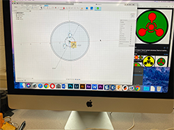
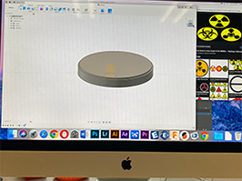
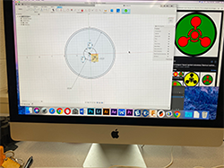
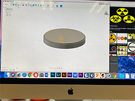
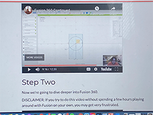
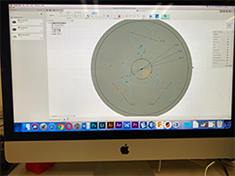
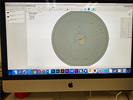
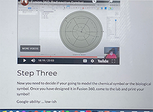

Weekly Assignments
Project 03: Additive Manufacturing
 



Step one: I first, sketched a circle along with certain constraints such as; tangent, horizontal/vertical, and then extruded it. I searched u pthe chemical symbol that I wanted to create to start building my skethc. as you can see, I sketched three small circles.
 

Step two: In this step, I was able to follow the class tutorial and this is where I was able to sketch the exact shapes that I needed in order to make my chemical symbol. I made the diameter of each circle within the outer circle equal. At first, I made the the lines of the rectangles constructed but it did not work. In the following step, you will be able to see how I was able to fully constrain my shapes and extrude certain parts of the image that needed to be extruded.
Step three: Once I had every shape that I needed in the sketch, now it was the time to make sure that every part of the sketch was constrained. This step was a bit of a struggle but I was able to constrain the figures in side of my sketch and then I extruded it. The most important part to esxtruding is making sure that every section that you desire to be extruded should be selected, or else your print will mess uip. Following this, I downloaded my Fusion 360 file as an stl file and then I uploaded it to Prusa Slicer.
Final step: After my chemical symbol was uploaded to the prusa slicer software, I placed the correct setting I wanted it to be printed in. I exported its G-code into an sd card and inserted it into the Asaji 3-D Printer. I printed it with a brim so it can have more support, preventing any problems from occuring. This was my final product!
- ...
Contact Me
If you have any questions, please fill out the form and fill me in with the details. :) It is always nice to meet new people!
Powered by w3.css